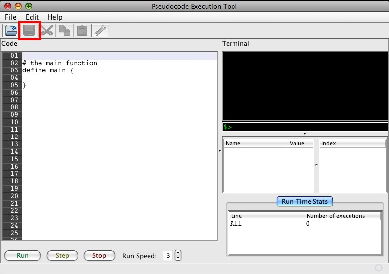
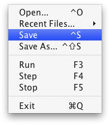

Saving code is storing it on the hard drive so that it can be retrieved later. Loading code is retrieving it after a save. Whenever you want to save your code, you can do so in two ways: you can click on the disk icon near the top of the window, shown here:
Or, you can do so from the File menu, shown here.
In the file menu, there are two options for saving: save and save as. Save as will allow you to specify a new file name and location on the disk when saving. Save uses the last file name and location that the file was saved as. The disk button at the top of the screen works like the save choice.
When you want to load a file, you do so from the File menu, shown above. For loading code, choose the Open menu item.